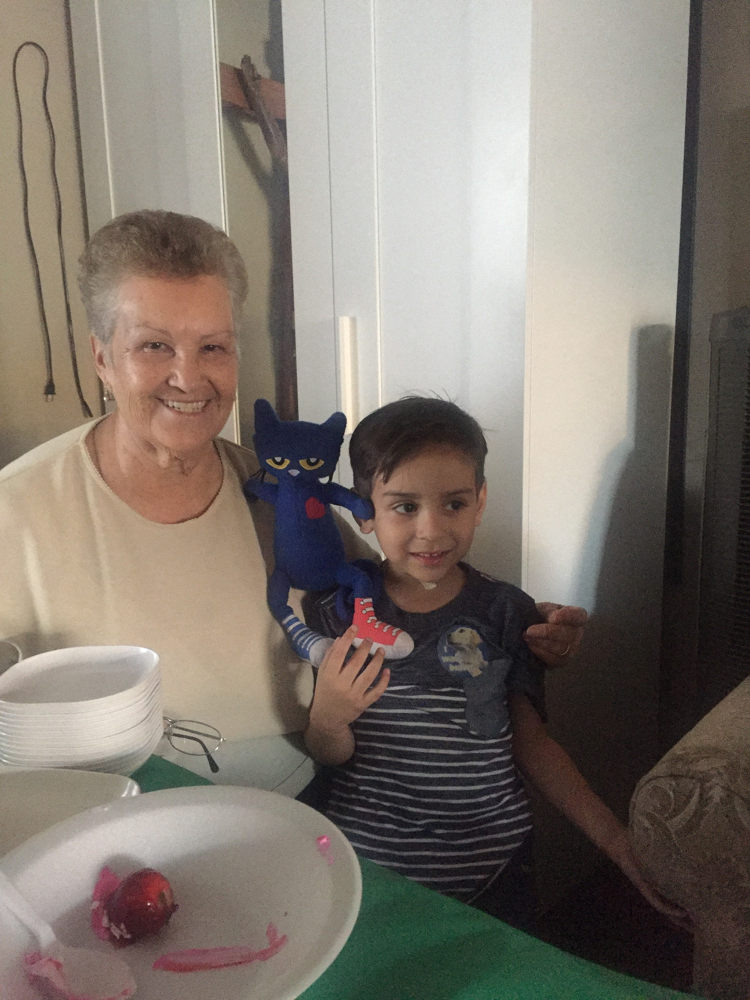
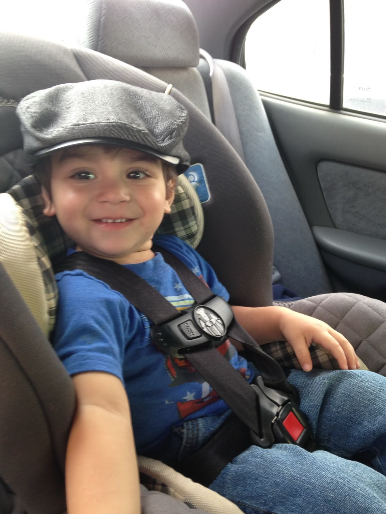
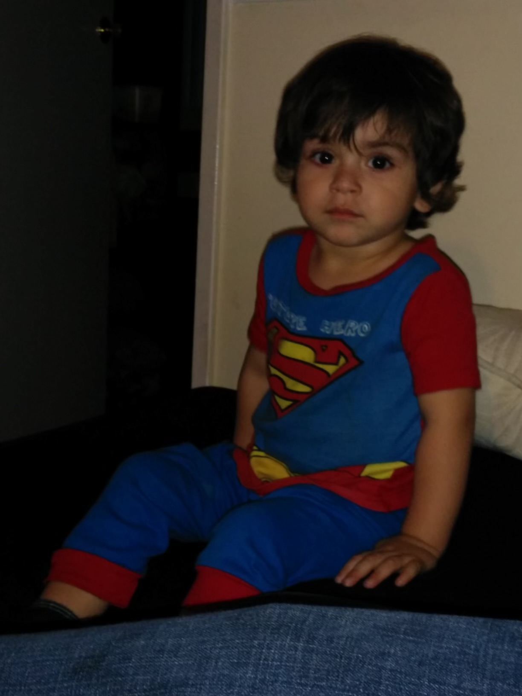
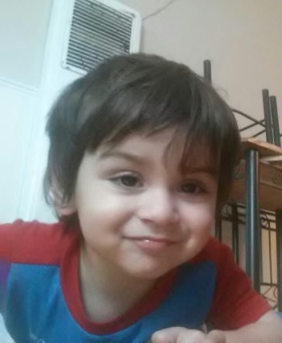
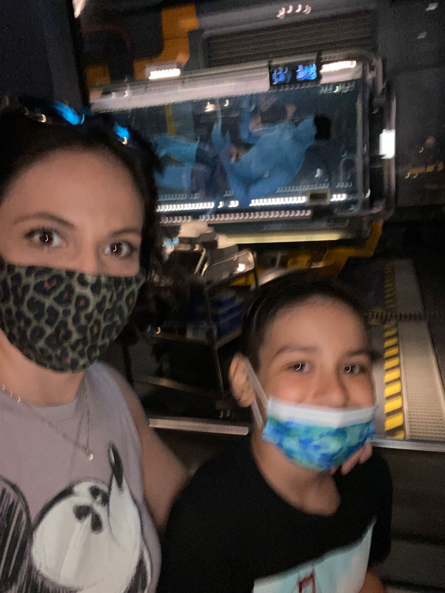

St. George School · SLE Portfolio
Five schoolwide learning expectations. Five chapters of growth. One journey through St. George School.

From an early age, my grandparents invited me into prayer and community. For a long time, I thought being a "good Catholic" meant never making mistakes, a pressure that felt impossible. Over time, I came to understand something different: I don't need to be a perfect image of Christ. I'm just called to do what I can for the people around me. That shift changed everything. Kindness became less of a rule and more of a reflex.

Being a responsible learner isn't about perfect grades. It's about ownership. In honors math, I push myself to stay organized and ask for help even when that's hard. Outside the classroom, this SLE shows up the most honestly: I pour hours into coding and 3D computer graphics because I genuinely want to get better. Learning doesn't stop at the bell. It keeps going whenever I sit down at my computer and build something new.

Being motivated pushes me toward things I'd rather avoid. I'm not naturally someone who jumps into new situations like group projects, field trips, unfamiliar people. But St. George kept putting me in those moments. And instead of just surviving them, I started showing up. Not to win, not to be the best. Just to be present and do my part. That quiet kind of motivation turned out to be more meaningful than I expected.

Talking to people used to feel impossible. I hated it. But class presentations taught me that speaking with confidence makes a bigger impact than mumbling through something, even when you're nervous. Over time, I started finding new ways to express myself: through code, through 3D art, through public speaking. Communication was always a wall for me. St. George is the reason it became a door.

Respect isn't something I can just say. It has to show in how I treat people and the world around me. I've learned that my actions, no matter how small, ripple outward. Being a respectful citizen means taking responsibility for those ripples. I want to carry this forward for the rest of my life. Not because it's required, but because I want to be known as someone who was kind.
St. George didn't just teach me academics. It shaped who I want to be. The SLEs, the student pledge, the school motto. They moved from words I said every morning to values I actually try to live. That foundation goes with me into high school and beyond.
so thanks St. George School